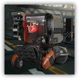

重装支援机械 Friston-3
近战 物理；普通 构装
|
 |
罗德岛重装机器人Friston-3。被工程师可露希尔派遣来执行战地作战任务。Friston-3由可露希尔亲自主持概念设计、落地组装与测试应用，依托于PRTS，实现了从底层代码到外部模块的全面革新。 本质上是罗德岛自主研发设计的S-C型四轮作业平台，相比罗德岛上的其他改型作业平台，他更加轻便，却拥有更为全面也更为稳定的性能。 |
重装支援机械丨Friston-3
中型构装（作战平台），守序中立
| AC 16 | 先攻 +1（11） |
| HP 33（4d8+16） | |
| 速度 30尺 | |
| 调整 | 豁免 | 调整 | 豁免 | 调整 | 豁免 | |||||||||
|---|---|---|---|---|---|---|---|---|---|---|---|---|---|---|
| 力量 | 14 | +2 | +2 | 敏捷 | 9 | -1 | +1 | 体质 | 18 | +4 | +6 | |||
| 智力 | 18 | +4 | +4 | 感知 | 12 | +1 | +1 | 魅力 | 12 | +1 | +1 |
| 技能 调查+6，历史+6 |
| 免疫 毒素；魅惑，恐慌，力竭，中毒，震慑，目盲，耳聋 |
| 装备 微型监控装置 |
| 感官 黑暗视觉60尺，被动察觉11 |
| 语言 通用语 |
| CR 1（XP200；PB+2） |
特质 Traits
存续进程 Continuing Process。重装支援机械进行先攻检定时，可以选择30尺内的至多3名可见盟友，目标在战斗开始后的首轮中，受到的所有伤害具有-2减值。
模块修复 Module Repairation。支援机械受益于修复术效应时，若其生命值不小于1，则恢复1d6点生命值。
稳定底盘 Stable Chassis。在对抗造成倒地状态的效应时，支援机械的体型视为大一级的体型，且所作的豁免检定具有优势。
动作 Actions
闪光冲撞 Flash Crash。体质豁免检定：DC14，单个重装支援机械5尺内的生物。失败：9（2d6+2）钝击伤害，且目标陷入目盲直到其回合开始。